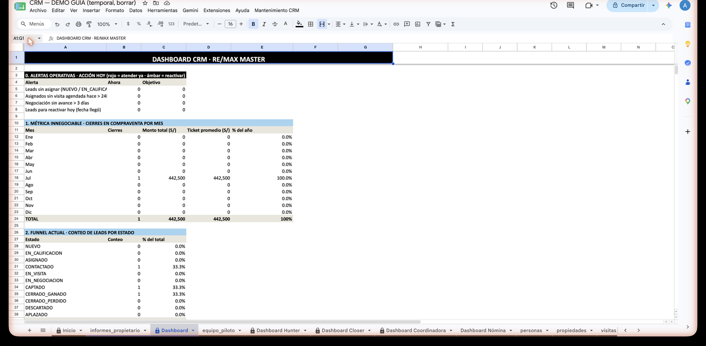
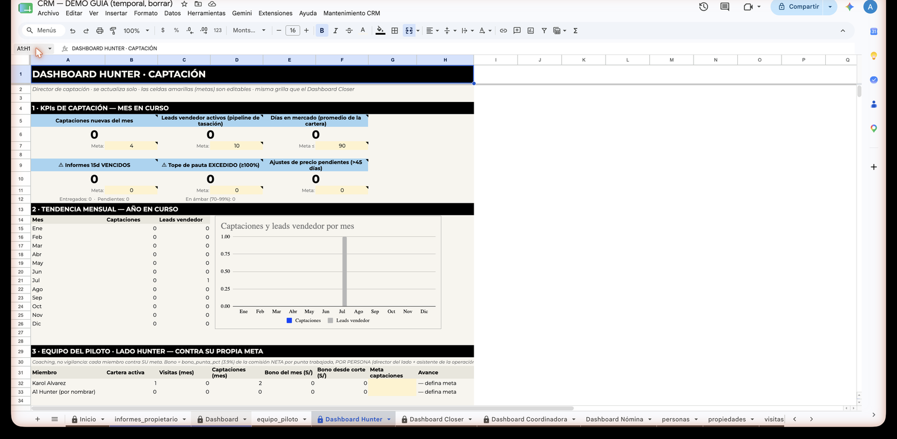
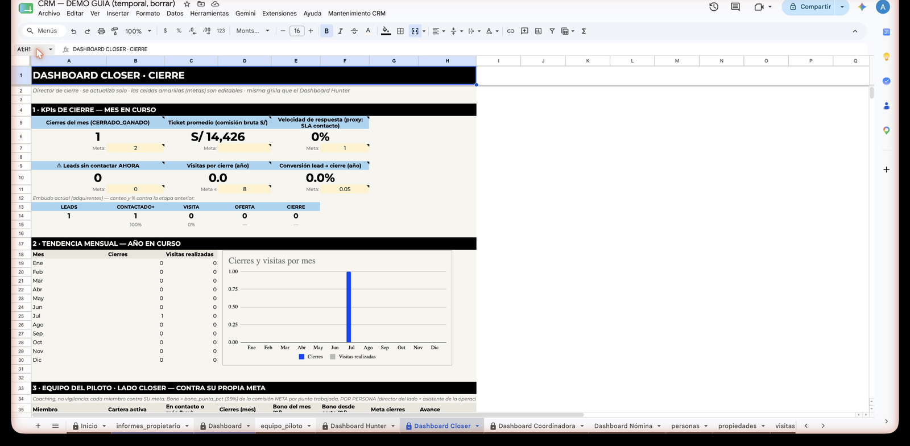
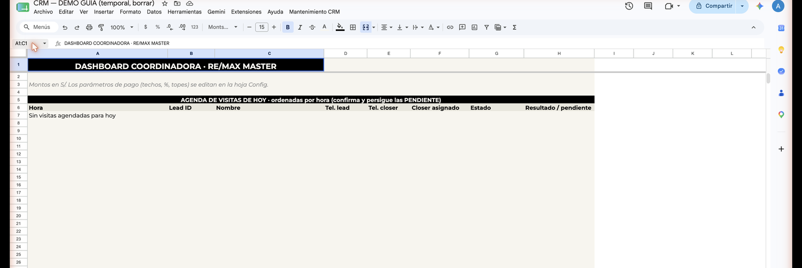
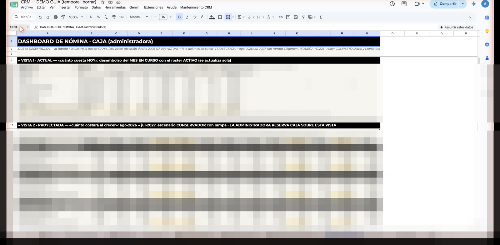

Los dashboards
Un dashboard es un tablero de resultados: una pestaña del CRM que junta los números importantes en una sola pantalla, para que no tengas que contar filas a mano. El CRM tiene seis. Aquí te decimos qué muestra cada uno, quién lo mira y qué preguntas te responde.
Lo primero que debes saber: los dashboards se actualizan solos. Cada vez que alguien registra un lead, una visita o un cierre en las hojas de trabajo, los números se recalculan sin que nadie haga nada. Por eso todos llevan el chip : son de solo lectura. No se escribe en ellos, no se "corrige" un número ahí, no se borra nada.
Regla de oro: si un número del dashboard se ve raro, el problema (o el dato faltante) está en las hojas de trabajo — personas, propiedades, visitas propiedades, campañas. Se corrige ahí, nunca en el dashboard. Y si no sabes dónde, avisa a Dirección. Si editas una celda calculada, el sistema la revierte y te avisa.
Mapa rápido: quién mira qué
| Dashboard | Quién lo mira | Para qué sirve |
|---|---|---|
| Dashboard (operativo) | Coordinadora, todos los días | La foto diaria de toda la operación |
| Dashboard Hunter | Equipo Hunter (captación) y Dirección | Cómo va la captación de propietarios |
| Dashboard Closer | Equipo Closer (cierre) y Dirección | Cómo va el cierre con adquirentes |
| Dashboard Coordinadora | La Coordinadora (su tablero personal) | Su agenda del día y el avance de su compensación |
| Dashboard Nómina | Solo Dirección | Cuánto cuesta el equipo, hoy y proyectado |
| Dashboard Reclutamiento | Coordinadora y Dirección | Cómo avanza el embudo de postulantes a agente |
1. Dashboard (operativo)
¿Quién lo mira? La Coordinadora, todas las mañanas al abrir el CRM. También Dirección cuando quiere la foto general del día.
Es el tablero madre: resume toda la operación en una pantalla. Muestra las alertas del día (leads para reactivar, plazos vencidos), el embudo completo de leads por estado, el cumplimiento de los SLA (los plazos máximos de atención: asignar en menos de 30 minutos, agendar visita el mismo día), el rendimiento de cada agente y el pulso de las campañas de publicidad. Aquí vive también la métrica innegociable de la oficina: cuántos cierres de compraventa hay por mes, por agente y por perfil.
Qué te responde
- ¿Cuántos leads entraron hoy y cuáles están vencidos de SLA (sin asignar o sin visita agendada a tiempo)?
- ¿Cuántos leads hay en cada etapa del embudo y dónde se están atorando?
- ¿Cuántos cierres de compraventa llevamos este mes y qué origen o campaña está trayendo más leads?
Así se ve en la práctica: entra un lead de "Carlos Demo Quispe" a las 10:12 por WhatsApp y nadie lo asigna. A los 30 minutos, el bloque de SLA del Dashboard lo pinta en rojo. La Coordinadora lo ve, asigna al agente, y el rojo desaparece solo. Nadie tuvo que contar nada.

2. Dashboard Hunter
¿Quién lo mira? El equipo Hunter — el lado que capta propietarios (vendedores, arrendadores, anticresistas deudores, constructoras): su Director(a) y sus asistentes. Dirección lo revisa para el seguimiento del piloto.
Mide la captación: cuántas propiedades entran a la cartera y qué tan bien se les da mantenimiento. Tiene seis bandas: los indicadores del mes contra su meta (captaciones, pipeline de propietarios, días en mercado), la tendencia de los últimos 12 meses con gráfico, el detalle por asistente — cada uno contra su propia meta, para coaching, no para ranking —, lo que va a ganar el equipo en el mes, la lista de informes de 15 días VENCIDOS (dice exactamente qué propiedad, cuándo venció y cuántos días de atraso lleva — no solo cuántos son) y la valoración de la cartera: cuántas propiedades están a valor de mercado y cuántas sobrevaloradas, comparando el precio listado contra el Valor ACM. Además vigila el tope de pauta por propiedad, que ahora se calcula sobre el valor ACM (el valor comercial real), no sobre el precio listado — así no se sobreinvierte en propiedades sobrevaloradas.
Qué te responde
- ¿Cuántas propiedades captamos este mes y cuánto falta para la meta?
- ¿A qué propiedad se le venció el informe de 15 días, desde cuándo, y hay que enviárselo ya?
- ¿Alguna propiedad se pasó del tope de gasto en publicidad?
- ¿Cuántas propiedades de la cartera están sobrevaloradas frente a su valor ACM (candidatas a aterrizar precio con el informe)?

3. Dashboard Closer
¿Quién lo mira? El equipo Closer — el lado que cierra con adquirentes (compradores, arrendatarios, anticresistas acreedores): su Director(a) y sus asistentes. Dirección lo revisa para el seguimiento del piloto.
Mide el cierre: qué tan rápido se atiende a los adquirentes y cuántos terminan cerrando. Su pieza central es el embudo de conversión — leads → contactados → visita → oferta → cierre — con el porcentaje que pasa de cada paso al siguiente: ahí se ve exactamente en qué escalón se caen los leads. También muestra los cierres del mes contra la meta, el ticket promedio, la velocidad de respuesta, cuántas visitas cuesta un cierre, la tendencia de 12 meses y el detalle por asistente contra su propia meta.
Qué te responde
- ¿Cuántos cierres llevamos este mes contra la meta?
- ¿Qué leads siguen sin contactar en este momento? (alerta en rojo si hay alguno)
- ¿En qué paso del embudo se pierden más leads: del contacto a la visita, o de la visita a la oferta?

4. Dashboard Coordinadora
¿Quién lo mira? La Coordinadora — es su tablero personal. Dirección lo usa para validar su compensación a fin de mes.
Junta dos cosas en una pantalla. Primero, la agenda de visitas de hoy: qué visitas hay confirmadas para el día y a quién corresponden. Segundo, el avance de su compensación del mes, descrito por función (los montos exactos son parte de su acuerdo con Dirección): cuánto proyecta el mes, cuánto ya está asegurado por los cierres reales, y el tráqueo de su desempeño — cuántos fallos de SLA lleva (leads que se asignaron tarde) y cuántos cierres del mes suman a su bono. Si los fallos se acumulan, el bloque se pinta en rojo: es su semáforo personal para no dejar leads sin asignar.
Qué te responde
- ¿Qué visitas hay agendadas hoy y con qué agente?
- ¿Cuántos fallos de SLA llevo este mes y cómo afectan mi bono de desempeño?
- ¿Cómo va mi mes: qué proyecta el sistema y qué ya está asegurado por los cierres reales?

5. Dashboard Nómina
¿Quién lo mira? Solo Dirección. Es el tablero de caja del equipo — no es material del día a día de la Coordinadora ni de los equipos.
Responde una sola gran pregunta — cuánto cuesta el equipo — en dos vistas. La vista ACTUAL es viva: el costo del mes en curso con el roster activo real (sueldos, bonos en vivo, cargas sociales, movilidad), todo incluido. La vista PROYECTADA es la película del año: una matriz persona por persona, mes a mes, que sigue la rampa del piloto y marca en ámbar los meses pico — cuando caen gratificaciones y CTS (los beneficios de ley que se pagan dos veces al año) la caja del mes sube, y este tablero lo anticipa para que no sorprenda.
Qué te responde
- ¿Cuánto cuesta el equipo este mes, con todo incluido (sueldos, bonos, cargas sociales)?
- ¿En qué meses del año la planilla pega picos por gratificaciones y CTS?
- ¿Cómo evoluciona el costo del equipo mes a mes según el ritmo de operaciones del piloto?

6. Dashboard Reclutamiento
¿Quién lo mira? La Coordinadora (que registra a los postulantes) y Dirección (que decide las afiliaciones).
Sigue el embudo de los agentes postulantes — las personas que quieren unirse a la oficina como agentes. Ellos no compran ni venden propiedades, así que tienen su propio camino: POSTULANTE → EN_ENTREVISTA → EN_VERIFICACION → EN_CAPACITACION → AFILIADO (o RECHAZADO en cualquier etapa). El dashboard muestra ese funnel etapa por etapa, la tasa de conversión (cuántos de los que postulan terminan afiliados y cuántos rechazados), los motivos de rechazo más frecuentes y el resumen del mes: postulantes nuevos, afiliados y rechazados. Cuando alguien llega a AFILIADO, el sistema lo da de alta solo en el roster de Agentes.
Qué te responde
- ¿Cuántos postulantes hay ahora y en qué etapa va cada uno?
- ¿Cuántos se afiliaron y cuántos se rechazaron este mes?
- ¿Por qué motivos se rechaza más? (para afinar el filtro de entrada)
Una última cosa
Paciencia con los ~10 segundos. Cuando registras algo en las hojas de trabajo, los dashboards tardan unos segundos en reflejarlo — es el ritmo normal de Google Sheets, no una falla. Teclea, espera, y el número aparece. Algunas celdas de meta (pintadas de amarillo en los dashboards Hunter y Closer) sí son editables, pero solo las ajusta Dirección.
Versión 1 · 2026-07-14 · REMAX Master Arequipa · Guía del CRM